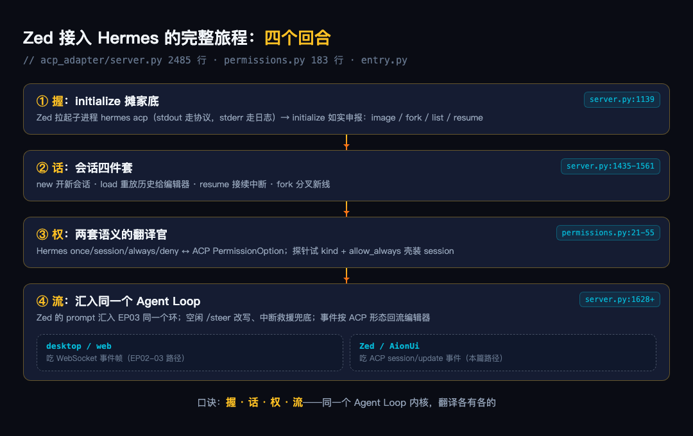
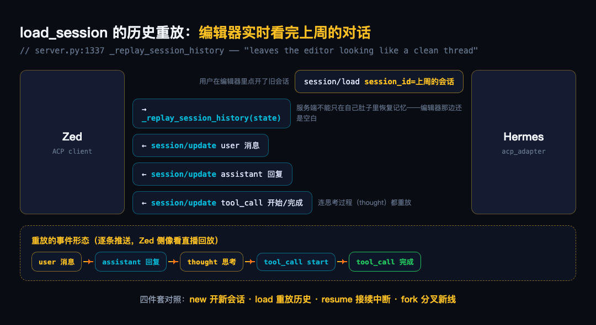
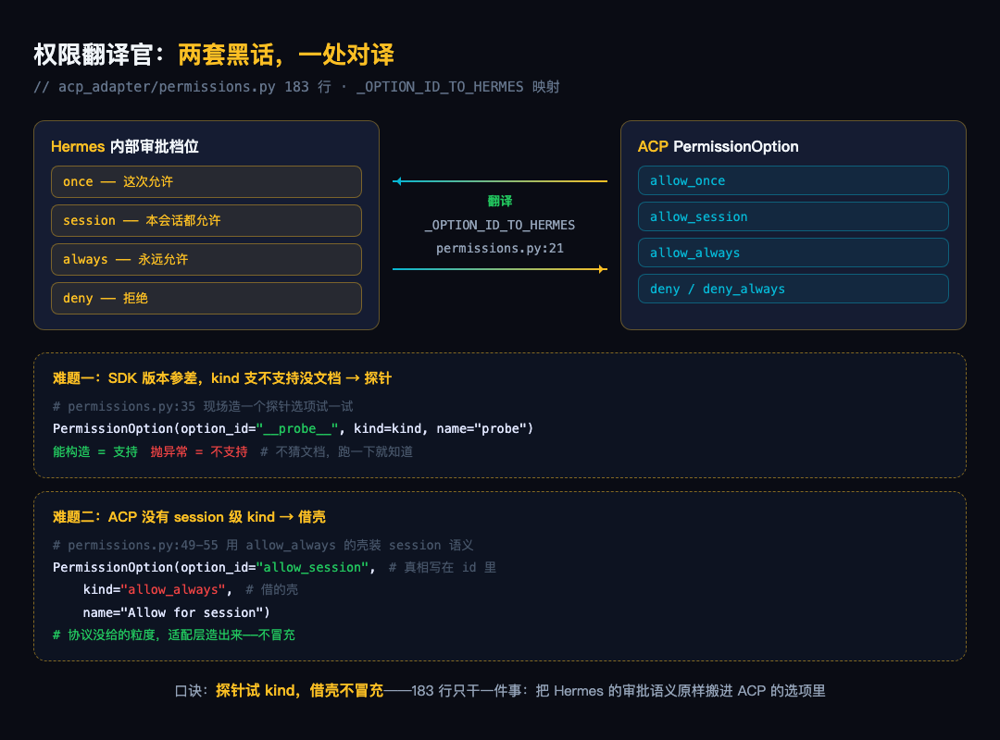
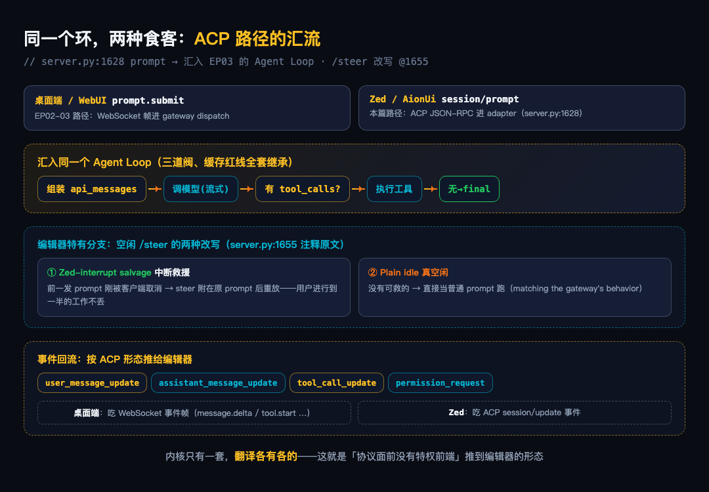

大家好我是郑同学。EP03 跟着一条消息走完了 Python 侧的 Agent Loop——那是 Hermes 当主人、伺候自己的桌面端。这一篇换个身份：Hermes 当被别人接入的零件。Zed、AionUi 这类编辑器通过 ACP 协议（Agent Client Protocol）把 Hermes 当成一个可插拔的 agent 后端——你在 Zed 里按下对话，背后干活的就是它。
先看全景图：一个编辑器从握手、开会话、要权限到收事件流的完整旅程，四步——握、话、权、流。

● ● ●
AionUi 的 Rust 后端（AionCore）有一张内置 agent 登记表，Hermes 那一行只登记了一个命令：
-- aionui-db/migrations/001_initial_schema.sql:312
('55f3ed1c', '.../hermes.svg', 'Hermes',
'hermes', 'acp', 'builtin', ...,
1, 'hermes', '["acp"]', ...),
command 是 hermes，参数就一个 acp。接下来是客户端的调用链——我会把 Rust 对照 Python 讲，不需要会 Rust：
// ① 拉起子进程，拿走 stdin/stdout 两条管道
// aionui-ai-agent/src/manager/acp/agent.rs:212
let process = CliAgentProcess::spawn_for_sdk(params.command_spec.clone()).await?;
let (stdin, stdout) = process.take_stdio().await;
// ② 在管道上建 JSON-RPC 连接，第一发请求就是 initialize
// aionui-ai-agent/src/protocol/acp.rs:755
let raw = connection.send_request(req).block_task().await;
// ③ 握手完成后开会话、发 prompt
// aionui-ai-agent/src/manager/acp/agent_session_flow.rs:43/354
let (session_response, _) = self.protocol.new_session(req).await?;
let prompt_response = self
.protocol
.prompt(PromptRequest::new(SessionId::new(sid), prompt_blocks))
.await?;
三行 Rust 逐个对照 Python：
let x = f().await?; 等于 Python 的 x = await f()——异步调用，出错就抛异常。? 是 Rust 的错误传播符，作用和 Python 里不写 try/except 让异常往上冒一样。let (stdin, stdout) = ... 是元组解包，同 Python 的 stdin, stdout = ...。CliAgentProcess::spawn_for_sdk(...) 的 :: 相当于 Python 的 类.静态方法(...)。.clone() 就是复制一份（Rust 的值默认只有一个所有者，传给别人前要先复制；Python 没这个概念，忽略即可）。self.protocol.prompt(...) 和 Python 的 self.protocol.prompt(...) 完全是一回事。
所以整个调用链翻译成 Python 心智模型就是：
process = spawn("hermes acp") # ①
stdin, stdout = process.take_stdio()
raw = connection.send_request(init_req) # ②
session = protocol.new_session(req) # ③
response = protocol.prompt(PromptRequest(sid, blocks))
注意 ② 的 initialize 不是单向打听——客户端的请求体里也带着自己的能力清单（terminal=true、config_options，acp.rs:96-113），握手是双向的。客户端发什么、服务端回什么，就是下面四个回合的全部内容。
这一篇全程跟着同一个场景走：你在 Zed 里装好 ACP 扩展，第一次让 Hermes 干活——第 1 秒拉起进程完成握手（握），第 2 秒开会话（话），你让它跑命令它来要授权（权），全程事件往编辑器流（流）。
● ● ●
时间线第 1 秒。Zed 和 AionUi 做的是同一件事：把 hermes acp 拉起来当子进程，stdin/stdout 两条管道接到手里。entry.py 的设计是 stdout 留给 ACP 的 JSON-RPC 消息、日志全走 stderr，两条管道互不干扰。
进程活了，客户端发来的第一个请求是 initialize。服务端回什么？下面是我在本机对 hermes acp 实发一个 initialize 收到的响应（stdout 原样，截取）：
{
"jsonrpc": "2.0", "id": 1,
"result": {
"protocolVersion": 1,
"agentInfo": {
"name": "hermes-agent",
"version": "0.18.0"
},
"agentCapabilities": {
"loadSession": true,
"promptCapabilities": { "image": true },
"sessionCapabilities": { "fork": {}, "list": {}, "resume": {} }
},
"authMethods": [
{ "id": "zai", "name": "zai runtime credentials", "description": "..." },
{ "id": "hermes-setup", "type": "terminal", "args": ["--setup"], "description": "..." }
]
}
}
四个字段各管一件事：agentInfo 是自我介绍（名字+版本号）；protocolVersion 是双方对齐的协议版本；agentCapabilities 是能力清单，客户端按它开 UI——image: true 才亮发图按钮，sessionCapabilities 里有 fork 右键菜单才有分叉选项；authMethods 是可用的认证方式列表（本机配了 zai 凭据，所以第一项就是它；没配置的客户端可以引导用户跑 hermes --setup）。
这份 JSON 就是服务端这段 Python 代码的产物——返回值被 SDK 序列化成上面那行 JSON：
async def initialize(self, protocol_version=None, ...):
return InitializeResponse(
protocol_version=acp.PROTOCOL_VERSION,
agent_info=Implementation(name="hermes-agent", version=HERMES_VERSION),
agent_capabilities=AgentCapabilities(
load_session=True,
prompt_capabilities=PromptCapabilities(image=True),
session_capabilities=SessionCapabilities(
fork=SessionForkCapabilities(),
list=SessionListCapabilities(),
resume=SessionResumeCapabilities(),
),
),
auth_methods=auth_methods,
)
对照着看：Python 里的蛇形命名（agent_info）序列化成驼峰（agentInfo），SessionForkCapabilities() 空对象就是 JSON 里的 {}——空对象表示"支持，无额外参数"。没申报的能力，客户端当不存在。
authenticate 有一个校验：只接受 initialize 里宣传过的认证方式（源码注释："Without this check, authenticate() would acknowledge any method_id"）。本地 stdio 场景下来者不拒也无害，但协议长大后这就是坑。
● ● ●
时间线第 2 秒。握手完毕，Zed 发来 session/new。服务端的会话管理是四个动词：
# server.py:1435 新开会话
async def new_session(self, cwd, mcp_servers):
...
# server.py:1456 载入已有会话（历史重放给编辑器）
async def load_session(self, session_id, new_session_id, cwd, mcp_servers):
...
# server.py:1504 恢复中断会话（接续没跑完的 turn）
async def resume_session(self, session_id, new_session_id):
...
# server.py:1561 从某点分叉出新会话
async def fork_session(self, session_id, session_mode, cwd):
...
load_session 值得展开（见图2）。你在 Zed 里打开上周的旧会话，服务端只在自己肚子里恢复记忆是不够的——编辑器那边还是一片空白。所以服务端要把历史按 ACP 的事件形态重放一遍：用户消息、助手回复、工具调用、思考过程，逐条推给 Zed。
先回答数据从哪来。重放的数据源是 state.history——一个消息列表，它的来路分两种情况：
# session.py:544 进程重启后，从磁盘数据库读回
history = db.get_messages_as_conversation(
session_id, repair_alternation=True
)
会话的每一条消息都存在 ~/.hermes/state.db 这个本地数据库里。写入时机在 server.py:1977——每个 turn 跑完，state.history = result["messages"] 更新内存，紧接着 save_session 把整段历史落盘：
# server.py:1977 turn 结束时写库
if result.get("messages"):
state.history = result["messages"]
# Persist updated history so sessions survive process restarts.
self.session_manager.save_session(session_id)
所以两条路径汇成同一个 state.history：进程活着，它就是内存里刚跑完的对话；进程重启过，它从 state.db 读回来（session.py:544，读的时候顺手修复 user/assistant 交替违规）。磁盘上有，就能重放。
有了数据，重放本身是一段朴素的状态机（_replay_session_history，server.py:1337）：遍历 history，按角色发对应事件——user 消息发 user update；assistant 消息先发思考过程（thought）再发正文；碰到 tool_calls 就发 tool_start 并记下 id，等下一条 role=tool 的消息到达时用这个 id 发 tool_complete。文档字符串原话——"Merely restoring server-side state makes Hermes remember context, but leaves the editor looking like a clean thread"（只恢复服务端状态，编辑器看起来还是一条空线程）。

resume 接 EP03 的线索：崩溃标记（turn marker）。上次进程死在半路、turn 没跑完？重启后 Zed 发 session/resume，服务端看到标记还活着，从断点接着跑。
● ● ●
会话开好了，让 Hermes 干活。它要跑 rm -rf node_modules 这种命令，得先问你——这一问撞上一个现实：Hermes 内部有自己的审批档位（once/session/always/deny），ACP 协议有自己的 PermissionOption，两套词长得像但不通用。
acp_adapter/permissions.py 183 行，全部工作就是做映射：
# ACP 选项 id → Hermes 审批结果的映射
_OPTION_ID_TO_HERMES = {
"allow_once": "once",
"allow_session": "session",
"allow_always": "always",
"deny": "deny",
"deny_always": "deny",
}
那 Zed/AionUi 那一侧发生了什么？整条链是四步（后面两步的代码在 AionCore 里，同样对照 Python 讲）：
第 1 步，Hermes 判定命令危险。terminal 工具执行前先过检查（tools/approval.py:749 的 DANGEROUS_PATTERNS，第一条就是 rm -rf 递归删除），命中就调用注册进来的审批回调。
第 2 步，回调把问题转成 ACP 请求。make_approval_callback（permissions.py:111）构造选项发给客户端——我在本机验证过这条链，客户端实际收到的是：
tool_call.title = 'recursive delete: rm -rf /tmp/x'
options = ['allow_once', 'allow_session', 'allow_always', 'deny', 'deny_always']
这五个选项就是翻译官递过去的菜单——Hermes 的四个档位，加上"永久拒绝"，全部按 ACP 的词表命名。
第 3 步，客户端弹 UI 等用户点。AionCore 收到 session/request_permission 后不自己决定，转发给前端等待（acp.rs:835，Rust 对照：event_tx.send(...) 把请求丢进通道，response_rx.await 挂起等用户的选择——等于 Python 的 await response_rx.get()）：
// aionui-ai-agent/src/protocol/acp.rs:842-855（节选）
let (response_tx, response_rx) = oneshot::channel();
event_tx.send(PermissionRequest { request, response_tx }).await;
// ↑ 请求丢给 UI；下方挂起等用户点按钮
let response = match response_rx.await {
Ok(PermissionDecision::Selected { option_id }) => /* 原样回传 */,
Ok(PermissionDecision::Cancelled) | Err(_) => /* 用户关掉弹窗 → Cancelled */,
};
Zed 同理——编辑器里你看到的那个授权弹窗，就是这一步的 UI。
第 4 步，答案原路映射回来。用户点了"本次允许"，客户端回 allow_once，第 1 张映射表把它译回 Hermes 的 "once"，命令放行。60 秒没回应就按超时处理，fail-closed（permissions.py:135）。
两个实现细节（见图3）：

① 探针探测——ACP SDK 版本参差，某种选项类型（kind）支不支持，没有文档可查。直接构造一个 PermissionOption(option_id="\_\_probe\_\_", kind=kind)，能构造就是支持，抛异常就是不支持（permissions.py:35）。
② 借壳——ACP 没有 session 级的 kind，Hermes 偏偏有"本次会话内都允许"这个档位。适配层用 allow_always 的壳装 session 语义，option_id 写 allow_session、显示名写"Allow for session"（permissions.py:49-55 注释："ACP has no session-scoped kind, so use the closest persistent hint while keeping Hermes semantics in the option id"）。协议没给的粒度，适配层补出来，且把真相写在 id 里。
● ● ●
Zed 发来的 prompt（server.py:1628）和 EP03 的 gateway 路径走的是同一个 Agent Loop。也就是说：无论消息来自桌面端还是编辑器，干活的都是同一套代码——组装消息、调模型、执行工具、循环往复。被别人接入，不用另起炉灶。
接入之后，Hermes 的每一步动静都会实时推给编辑器，你在 Zed 里看到的三样东西就是这么来的：
桌面端和编辑器看到的其实是同一件事，只是包装不同：桌面端收 WebSocket 消息，Zed 收 ACP 事件。内核只有一套，出口两种。

编辑器场景多了一个特殊操作：模型正在思考时，你又追加了一句"顺便把测试也跑了"。Zed 会把它包成 /steer 指令发过来。但此时模型正在忙，没有正在执行的工具调用可以"插队"，怎么办？适配层直接改写这条指令（server.py:1655 的源码注释）：
# /steer on an idle session has no in-flight tool call to inject into.
# Rewrite it so the payload runs as normal user prompt, matching
# the gateway's behavior. Two sub-cases:
# 1. Zed-interrupt salvage — a prior prompt was cancelled by the
# client right before /steer arrived; replay it with the steer
# text attached as explicit correction/guidance so the user's
# in-flight work isn't lost.
# 2. Plain idle — no prior work to salvage; just run the steer
# payload as a regular prompt.
分两种情况：你上一条消息刚被 Zed 取消——就把追加的话并进原消息重新跑，你写到一半的工作不会丢；会话本来就闲着——就把它当普通消息跑。这样处理是为了和桌面端行为保持一致。
● ● ●
看完两边，轮到你了。假设你在写一个编辑器插件或自己的桌面端，想把 Hermes 接进来当 agent 后端，照下面五步做。每一步都是前面 AionCore 趟过的路，示例用 Python，Rust/TS 同理。
第 1 步：拉起进程，接管两条管道。
proc = subprocess.Popen(["hermes", "acp"],
stdin=subprocess.PIPE, stdout=subprocess.PIPE,
stderr=subprocess.DEVNULL, # 日志走 stderr，别混进协议
text=True)
stdout 上的每一行是一条 JSON-RPC 消息，stdin 同理。你的"协议层"就是循环读行、解析 JSON、按 id 配对请求和响应。
第 2 步：发 initialize，收能力清单。
send({"jsonrpc": "2.0", "id": 1, "method": "initialize",
"params": {"protocolVersion": 1,
"clientCapabilities": {},
"clientInfo": {"name": "my-editor", "version": "0.1"}}})
响应里的 agentCapabilities 是你后续能用的全部功能开关（image、loadSession、sessionCapabilities...），authMethods 告诉你认证方式。没配凭据时按 hermes-setup 条目的提示引导用户跑 hermes --setup，然后发 authenticate（method_id 用清单里报过的那个）。
第 3 步：session/new 开会话。 params 里 cwd 传你的工作区路径——Hermes 的文件和终端操作都以此为根。
第 4 步：session/prompt 发消息，处理三类推送。 会话期间服务端会主动推 session/update 通知（assistant 消息块、工具开始/结束、思考过程）和 session/request_permission 请求（授权弹窗——按收到的 options 回一个 optionId，或不回等它超时）。
第 5 步（可选）：会话恢复。 initialize 里声明过 loadSession 的话，重启后用 session/load + session_id 恢复会话，服务端会把历史重放给你。
三个 Hermes 特有的点，照抄 AionCore 的处理最稳：
hermes acp 进程；/steer 你的追加内容 作为 prompt 文本（server.py:1667 按 /steer 前缀识别），不需要单独的 RPC 方法；ping 请求，Hermes 回错误码 -32601（method not found）也算活着，entry.py:47 的注释专门为这种情况消了噪音。● ● ●
| 环节 | 核心机制 |
|---|---|
| 握 | 能力申报制：image/fork/resume 如实报，客户端按单开 UI |
| 话 | new/load/resume/fork 四件套；load 按事件形态重放历史 |
| 权 | 两套语义映射：探针测 kind、allow_always 壳装 session |
| 流 | 编辑器适配：空闲 steer 改写、中断救援不丢工作 |
下一篇 EP05 进 plugins/memory：8 个可插拔记忆 provider，Hermes 的记忆不是内置死的，是一排可以换的零件。
素材：acp_adapter/server.py（2485 行）、acp_adapter/permissions.py（183 行）、acp_adapter/entry.py、AionCore aionui-ai-agent，全部源码节选，行号可查。